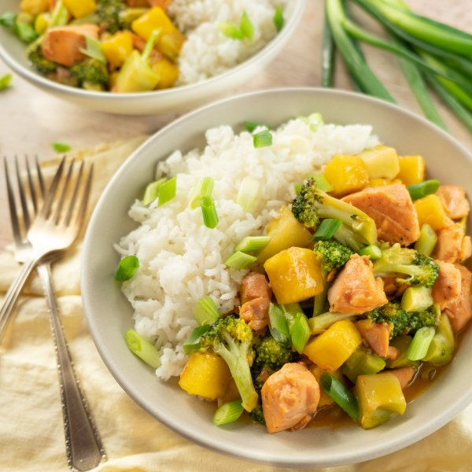

Pineapple-Salmon Teriyaki Stir-Fry with Broccoli & Green Onion

Nutrition (per serving)
704.1 kcalCalories
47.7 gProtein
92.6 gCarbs
15.9 gFat
Full nutrition table
| Calories | 704.1 kcal |
| Total fat | 15.9 g |
| Saturated fat | 6.3 g |
| Trans fat | 0 g |
| Cholesterol | 76.5 mg |
| Sodium | 118.7 mg |
| Carbohydrates | 92.6 g |
| Fiber | 5.9 g |
| Sugars | 22.6 g |
| Protein | 47.7 g |
| Potassium | 1421.2 mg |
| Calcium | 168.9 mg |
| Iron | 5.8 mg |
| Vitamin A | 1076.5 IU |
| Vitamin C | 138.4 mg |
| Vitamin D | 614.1 IU |
Cookware
Ingredients
- 2 crownsbroccoli
- 2 clovesgarlic
- 2 (1 inch) piecesginger root
- 1 small bunchgreen onions (scallions)
- 1 ½ cupsjasmine rice
- 1 smallpineapple
- 1 ½ lbsalmon fillet
- black pepper
- cornstarch
- honey
- rice vinegar
- salt
- soy sauce
- virgin coconut oil
Steps
- Using a strainer or colander, rinse the rice under cold, running water, then drain and transfer to a medium saucepan. Add water and salt; bring the mixture to a boil over high heat.1 ½ cups jasmine rice
3 cup water
½ tsp salt - Wash and dry the fresh produce.1 small pineapple
2 (1 inch) pieces ginger root
2 crowns broccoli
1 small bunch green onions (scallions) - Once the liquid comes to a boil, stir the mixture, cover the saucepan, and reduce the heat to low. Cook the rice until the liquid is fully absorbed, 15-18 minutes. Once done, remove the rice from the heat and let it stand, still covered, for 5 minutes.
- Meanwhile, cut skin off pineapple, core, and medium dice (cut into ¾-inch cubes). Add a 1 cup diced pineapple to a blender; set remaining pineapple aside in a medium bowl.
- Peel the garlic and ginger; add to the blender along with soy sauce, honey, vinegar, and pepper. Blend on high until smooth. Set teriyaki sauce aside.2 cloves garlic
⅓ cup soy sauce
2 tbsp honey
¼ cup rice vinegar
¼ tsp black pepper - If using salmon with skin, place the fillet, skin-side down, on a cutting board. Holding the tail end firmly, use a knife to cut between the flesh and skin; continue to cut through the length of the fillet (take care not to cut through the skin); discard the skin. If you don’t have a tail end, start at one corner of the fillet and work your way in until the knife is between the skin and flesh.1 ½ lb salmon fillet
- Cut salmon into bite-sized pieces.
- Preheat a large nonstick skillet over medium heat. Once the skillet is hot, add oil and swirl to coat the bottom.2 tsp virgin coconut oil
- Add salmon to the skillet; cook, stirring occasionally, until almost cooked through, 2-3 minutes. Transfer to a clean plate.
- Meanwhile, separate broccoli into bite-sized florets and cut stems into smaller pieces.
- Return skillet to the stove over medium heat. Add more oil to melt. Add broccoli and cook, stirring often, until slightly softened, 1-2 minutes.2 tsp virgin coconut oil
- In a small bowl, make a slurry by whisking water with cornstarch until smooth.¼ cup water
4 tsp cornstarch - Add diced pineapple and teriyaki sauce to the skillet. Increase heat to high and add the cornstarch slurry in a steady stream while stirring quickly. Cook, stirring often, until sauce thickens, 2-3 minutes.
- Add salmon back to the skillet; gently stir to combine and heat through, about 1 minute. Remove from heat.
- Trim off and discard the ends of the green onions; cut the crosswise into ¼-inch pieces at an angle.
- To serve, divide rice and salmon stir-fry between bowls. Garnish with green onion and enjoy!